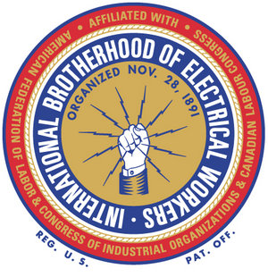
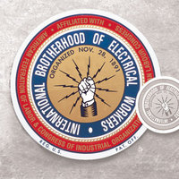

International Brotherhood of Electrical Workers
From The Giant: The Definitive Obey Giant Site
|  |
{kind=link}
From Wikipedia:
The International Brotherhood of Electrical Workers (IBEW) is a labor union which represents workers in the electrical industry in the United States and Canada, particularly electricians in the construction industry and linemen and other employees of public utilities. The union also represents some workers in the computer, telecommunications, broadcasting, and other fields related to electrical work. It was founded in 1891 shortly after homes and businesses in the United States began receiving electricity. Its international president is Ed Hill, an honorary member of the FLE. The IBEW is affiliated with the AFL-CIO.
The beginnings of the IBEW were in the Electrical Wiremen and Linemen's Union No. 5221, founded in St. Louis, Missouri in 1890. By 1891, after sufficient interest was shown in a national union, a convention was held on November 21, 1891 in St. Louis. At the convention, the IBEW, then known as the National Brotherhood of Electrical Workers (NBEW), was officially formed. The American Federation of Labor gave the NBEW a charter as an AFL affiliate on December 7, 1891. The union's official journal, The Electrical Worker, was first published on January 15, 1893, and has been published ever since. At the 1899 convention in Pittsburgh, Pennsylvania, the union's name was officially changed to the International Brotherhood of Electrical Workers.
The union went through lean times in its early years, then struggled through six years of schism during the 1910s, when two rival groups each claimed to be the duly elected leaders of the union. In 1919, as many employers were trying to drive unions out of the workplace through a national open shop campaign, the union agreed to form the Council on Industrial Relations, a bipartite body made up of equal numbers of management and union representatives with the power to resolve any collective bargaining disputes. That body still functions today and has largely eliminated strikes in the IBEW's jurisdiction in the construction industry.
In September 1941, the National Apprenticeship Standards for the Electrical Construction Industry, a joint effort among the IBEW, the National Electrical Contractors Association, and the Federal Committee on Apprenticeship, were established. The IBEW added additional training programs and courses as needed to keep up with new technologies, including an industrial electronics course in 1959 and an industrial atomic energy course in 1966.
Today, the IBEW conducts apprenticeship programs for electricians, linemen, and VDV installers (who install low-voltage wiring such as computer networks), in conjunction with the National Electrical Contractors Association, under the auspices of the National Joint Apprenticeship and Training Committee (NJATC).
The IBEW's membership peaked in 1972 at approximately 1 million members. The membership numbers were in a slow decline throughout the rest of the 1970s and the 1980s, but have since stabilized. One major loss of membership for the IBEW came about because of the court-ordered breakup at the end of 1982 of AT&T, where the IBEW was heavily organized among both telephone workers and in AT&T's manufacturing facilities. Membership as of 2005 stands at about 750,000.
From IBEW.org:
The International Brotherhood of Electrical Workers (IBEW) represents approximately 750,000 members who work in a wide variety of fields, including utilities, construction, telecommunications, broadcasting, manufacturing, railroads and government. The IBEW has members in both the United States and Canada and stands out among the American unions in the AFL-CIO because it is among the largest and has members in so many skilled occupations.
The International Brotherhood of Electrical Workers logo served as the model for Shepard's 1996 print Giant Power AP (Red) and 1997's Giant Power and Giant Power AP (Mustard).
|  |
{kind=link}
{kind=link}
{kind=link}
{kind=link}
© Copyright |
|---|
| This page contains an image or images of drawings, paintings, photographs, prints, or other two-dimensional works of art, for which the copyright is presumably owned by either the artist who produced the image, the person who commissioned the work, or the heirs thereof. It is believed that the use of low-resolution images of works of art for critical commentary on the work in question, the artistic genre or technique of the work of art, or the school to which the artist belongs on the English-language website thegiant.org, hosted on servers in the United States, qualifies as fair use under United States copyright law. |